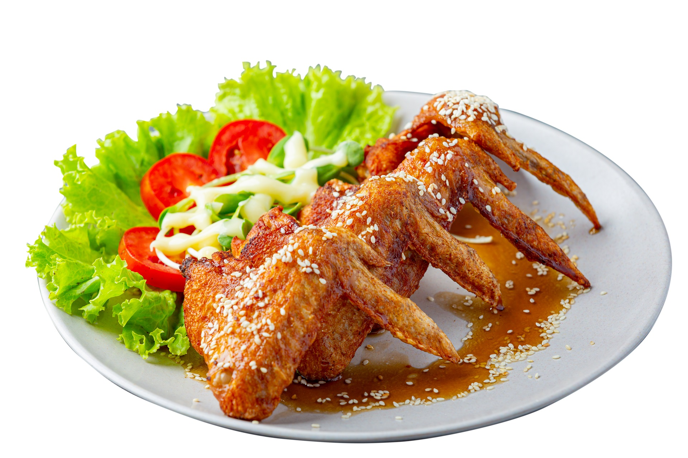
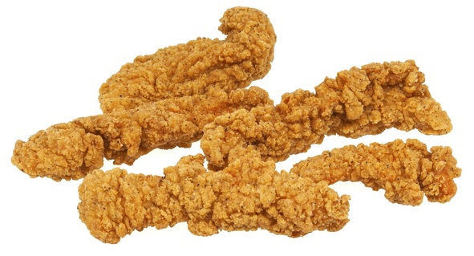

Magro
Magro
Pechuga de pollo
Corte magro y de fibra fina, ideal para plancha, empanados o salteados rápidos.
Guía visual de cortes, jugosidad y usos en cocina
Cada parte del pollo ofrece un nivel distinto de grasa infiltrada, textura y tiempo de cocción, lo que permite adaptar la elección a plancha, horno, guisos o parrilla.
Magro
Corte magro y de fibra fina, ideal para plancha, empanados o salteados rápidos.
 Jugoso
Jugoso
Carne oscura más jugosa y sabrosa, perfecta para asados al horno y estofados.

CrujientePieza pequeña con piel crujiente al dorarse, habitual en freidora, brasa o salsa.
 Horno
Horno
Pieza con hueso que conserva muy bien la humedad en cocciones largas.

TiernoTira interior de la pechuga especialmente tierna para rebozados y brochetas.
 Asado
Asado
Pollo entero, muy apreciado al horno.
 Versátil
Versátil
Preparación para freidora.
 Caldo
Caldo
Corte óseo esencial para caldos limpios, sopas y fondos de cocina.